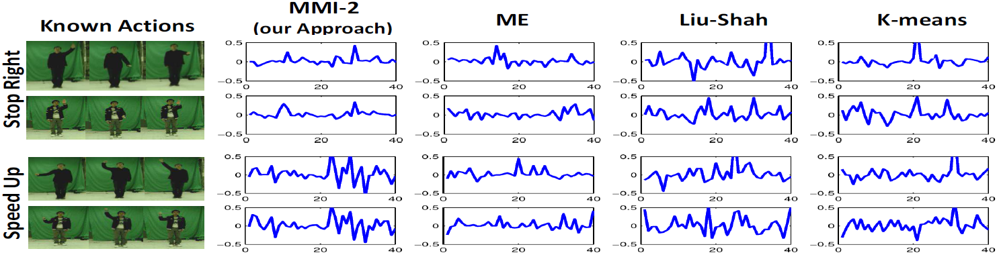

[Home] [Publications] [Citations] [Resources]
My Research focuses on Computer Vision, Pattern Recognition and Machine Learning, specifically on the following topics:
Submodularity is an intuitive diminishing returns property, stating that adding an element to a smaller set helps more than adding it to a larger set. Submodularity allows one to efficiently find (near-)optimal solutions, which is useful in a lot of vision applications. My research aims to use submodularity optimization to solve various vision problems.

- Zhuolin Jiang, Larry S. Davis. "Submodular Salient Region Detection". IEEE Conference on Computer Vision and Pattern Recognition, 2013. [pdf]

- Zhuolin Jiang, Guangxiao Zhang, Larry S. Davis. "Submodular Dictionary Learning for Sparse Coding". IEEE Conference on Computer Vision and Pattern Recognition, 2012. [pdf]

- Qiang Qiu, Zhuolin Jiang, Rama Chellappa. "Sparse Dictionary-based Representation and Recognition of Action Attributes". IEEE Conference on Computer Vision, 2011. [pdf]
Sparse coding approximate an input signal as a linear combination of a few items from a predefined and learned dictionary. It usually achieves state-of-the-arts in all kinds of vision applications. The performance of sparse coding relies on the quality of dictionary. My research aims to learn a discriminative dictionary for recognition.

- Zhuolin Jiang, Zhe Lin, Larry S. Davis. " Learning a Discriminative Dictionary for Sparse Coding via Label Consistent K-SVD". IEEE Conference on Computer Vision and Pattern Recognition, 2011. [pdf]
- Zhuolin Jiang, Zhe Lin, Larry S. Davis. Label Consistent K-SVD: Learning A Discriminative Dictionary for Recognition. IEEE Transactions on Pattern Analysis and Machine Intelligence, 2013. [pdf]
- Huimin Guo*, Zhuolin Jiang*, Larry S. Davis. " Discriminative Dictionary Learning with Pairwise Constraints". Asian Conference on Computer Vision, 2012. (ORAL) (* indicates equal contribution, Best Student Paper Award). [pdf]
- Guangxiao Zhang, Zhuolin Jiang, Larry S. Davis. "Online Semi-supervised Discriminative Dictionary Learning for Sparse Representation". Asian Conference on Computer Vision, 2012. [pdf]
- Jingjing Zheng, Zhuolin Jiang. "Tag Taxonomy Aware Dictionary Learning for Region Tagging". IEEE Conference on Computer Vision and Pattern Recognition, 2013. [pdf]
- Yangmuzi Zhang, Zhuolin Jiang, Larry S. Davis. "Discriminative Tensor Sparse Coding for Image Classification". British Machine Vision Conference, 2013. [pdf]
A common modeling assumption in many applications is that the underlying data lies (approximately) on a low-dimensional linear subspace. That is, a matrix X can be decomposed into two matrices: X = A+E, where A is a low-rank matrix and E is a sparse matrix. Low-rank matrix recovery which determines the low-rank matrix A from X, has been successfully applied to many applications. My research aims to use this technique for multi-class classification.
- Yangmuzi Zhang, Zhuolin Jiang, Larry S. Davis. "Learning Structured Low-rank Representations for Image Classification". IEEE Conference on Computer Vision and Pattern Recognition, 2013. [pdf]
Data clustering is an important task in vision. I used it to learn action prototypes (or action prototype tree). A large number of studies aim to improve clustering by using supervision in the form of pairwise constraint or category information of each point. I used the category information to enforce discriminativeness for each cluster so the final clusters good for classification.

- Zhe Lin, Zhuolin Jiang, Larry S. Davis. "Recognizing Actions by Shape-Motion Prototype Trees". IEEE Conference on Computer Vision, 2009. [pdf]
- Zhuolin Jiang, Zhe Lin, Larry S. Davis, "Recognizing Human Actions by Learning and Matching Shape-Motion Prototype Trees". IEEE Transactions on Pattern Analysis and Machine Intelligence, 2012, 34(3): 533-547. [pdf]

- Zhuolin Jiang, Zhe Lin, Larry S. Davis. "A Tree-based Approach to Integrated Action Localization, Recognition and Segmentation". ECCV Workshop on Human Motion, 2010. [pdf]
- Zhuolin Jiang, Zhe Lin, Larry S. Davis. "A Unified Tree-based Framework for Joint Action Localization, Recognition and Segmentation". Computer Vision and Image Understanding, 2012. [pdf]

- Zhuolin Jiang, Zhe Lin, Larry S. Davis, "Class Consistent k-means: Application to Face and Action Recognition". Computer Vision and Image Understanding, 2012, 116(6): 730-741. [pdf]
Many learning approaches work well only under a common assumption: training and testing data are drawn from the same feature space and distribution. In many practical applications, the assumption may not hold. In such cases, transfer learning between task domains would be desirable since it is expensive to recollect training data and rebuild the model. My research aims to transfer knowledge across domains and transfer from multiple such source domains.

- Jingjing Zheng, Zhuolin Jiang, Jonathon Phillips, Rama Chellappa. "Cross-View Action Recognition via a Transferable Dictionary Pair". British Machine Vision Conference, 2012. (ORAL). [pdf]

- Jingjing Zheng, Zhuolin Jiang. "Learning View-invariant Sparse Representations for Cross-view Action Recognition". IEEE Conference on Computer Vision, 2013. [pdf]